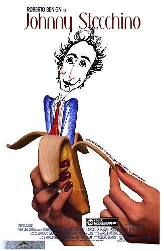

34:56 · 8 OPERE
La distanza tra il mondo e la sua narrazione.
Il filo del discorso
Un annuncio di possibili incontri a Valencia e alla fiera del libro di Francoforte diventa una riflessione sul contrasto tra amore per i libri e distanza dall’industria editoriale. Dr Divago ricorda una lettera aperta agli editori, Paura degli specchi, e sostiene che il valore di un testo venga sempre più sostituito dalla posizione pubblica del suo autore.
Leggi la sintesi completaRiduci la sintesi
Il caso del libro di Vannacci, La vita secondo Orietta e l’esperienza personale della pubblicazione introducono una difesa dell’editoria indipendente come possibilità di far circolare idee. Il discorso passa poi dai libri all’informazione: interviste televisive, incarichi universitari di ex politici e riconoscimenti culturali sono letti dal relatore come segnali del predominio delle gerarchie sui contenuti. La metafora del mitridatismo descrive un individuo che si abitua a ciò che lo avvelena pur di evitare un conflitto con la quotidianità. Johnny Stecchino, Leonida e l’immagine tradizionalmente associata a Galileo diventano figure del confronto con una realtà scomoda. Il passaggio su Socrate e i sileni sposta l’attenzione dall’aspetto esteriore al valore interiore, mentre Kant, Genesi e Stirner vengono accostati sul tema dell’autonomia. Nella conclusione, i libri e il ragionamento sono presentati come antidoti alla rinuncia al giudizio. La scheda conserva questo itinerario distinguendo testimonianze personali, analogie e dati verificabili: la presenza di incarichi accademici non dimostra una regia comune, e l’affermazione sui tatuaggi finti di Fetterman contrasta con sue dichiarazioni e riscontri pubblici.
I libri nel discorso

Il mondo al contrario
Identificazione probabile
Note sul riferimento
Copertina: Il mondo al contrario, Il Cerchio 2023, seconda edizione aggiornata, prefazione di Francesco Borgonovo, 228 pagine, in commercio dal 20 settembre 2023, ISBN 9788884746900. Copertina bianca con seconda parte del titolo capovolta. Riedizione distinta dall’originale autopubblicato discusso nel video.
Immagine autentica dell’opera, controllata visivamente; l’edizione di riferimento non è attribuita al filmato.
Il generale Vannacci e il suo libro sono riconoscibili; titolo completo non letto. Identificazione contestuale probabile.

La vita secondo Orietta. I segreti, i consigli e le ricette per essere felici
Note sul riferimento
Copertina: Sperling & Kupfer · 1997 · a cura di Tommaso Labranca
Immagine autentica dell’opera, controllata visivamente; l’edizione di riferimento non è attribuita al filmato.
La vita secondo Orietta esplicitamente nominato.

La società del contrario
Note sul riferimento
Copertina: Zambon · 2005
Copertina autentica dell’edizione di riferimento, controllata visivamente. Non identifica l’esemplare letto o citato nel video.
Titolo del proprio libro esplicito, ripreso nel racconto del paragrafo rimosso.

Johnny Stecchino
Note sul riferimento
Locandina del film: MANIFESTO INTERNAZIONALE IN INGLESE del film Johnny Stecchino, regia di Roberto Benigni, Italia 1991, sceneggiatura di Benigni e Vincenzo Cerami. Il catalogo dei manifesti lo colloca nella distribuzione 1992, distinta dall’anno di produzione. Immagine con banana aperta e caricatura di Benigni; titolo e crediti visibili. Non copertina di libro.
Manifesto internazionale catalogato nel 1992; film italiano prodotto nel 1991. Nessun libro autonomo omonimo attribuito al video.
Titolo esplicito e richiamo alla battuta sul traffico di Palermo.

Simposio
Identificazione probabile
Note sul riferimento
Copertina: Adelphi · Piccola Biblioteca 81 · 1979
Copertina autentica dell’edizione di riferimento, controllata visivamente. Non identifica l’esemplare letto o citato nel video.
Socrate paragonato ai sileni che contengono immagini divine: probabile Simposio215a–b; titolo non pronunciato.

Risposta alla domanda: che cos’è l’Illuminismo?
Note sul riferimento
Copertina della raccolta che comprende il saggio sull’Illuminismo: Firenze University Press · Sette scritti politici liberi · 2011 · a cura di Maria Chiara Pievatolo
Copertina del volume cartaceo FUP che comprende il saggio, riscontrato dal catalogo universitario. L’ISBN appartiene alla raccolta; il filmato non annuncia un’edizione e il titolo del saggio è un’identificazione probabile della citazione.
Kant e il suo testo su che cosa sia l’Illuminismo espliciti.

Genesi
Note sul riferimento
Copertina: Einaudi, I libri della Bibbia / Einaudi Tascabili, 2000; introduzione di Steven Rose
Copertina dell’edizione autonoma Genesi, nella serie I libri della Bibbia, con introduzione di Steven Rose. Edizione scelta come riferimento iconografico; nessuna edizione è confermata nel video.
Titolo Genesi e domanda a Adamo dopo il frutto, corrispondente a3,9.

L’unico e la sua proprietà
Note sul riferimento
Copertina: Adelphi, Biblioteca 91, 1979; traduzione di Leonardo Amoroso
Copertina dell’edizione Biblioteca Adelphi 91, con un saggio di Roberto Calasso. Edizione scelta come riferimento iconografico; nessuna edizione è confermata nel video.
Stirner e L’unico e la sua proprietà esplicitamente nominati.